Study
Study list
Research
My Research
연속시간 신호와 이산시간 신호
Continuous-time signal and Discrete-time signal
연속시간 신호 시스템과 이산시간 신호 시스템의 특징과 차이점
그림과 같이 끊기지 않고, 연속적인 시간을 컨티뉴어스 타임 시그널이라 표현합니다.
반면 연속적인 시간을 표현하지 못하며, 점들의 집합으로 표현되는 신호를 디스크리트 타임 시그널이라 표현합니다.
컨티뉴어스 시그널은 x(t), 디스크리트 시그널은 x[n]으로 표현됩니다.
()가 연속적인 느낌을, []가 뭔가 끊어지는 이산적인 느낌이 납니다.
이 두 가지 개념의 주요 특징이자 차이점은 연속시간에서 표현되는 적분의 개념은 이산시간에서 SUM으로 표현된다는 점입니다.
예를 들어, 전력을 구하는 공식을 생각해볼 수 있는데, 연속신호인 v와 I를 곱한 값은 p가 됩니다.
이 때 에너지를 구하려면 p를 시간에 따라 적분합니다.
이처럼 Continuous time 시간이 연속적이기 때문에 적분이 가능합니다.
만약 이 개념을 Discrete signal로 가져오게 되면 적분대신 sigma를 이용합니다.
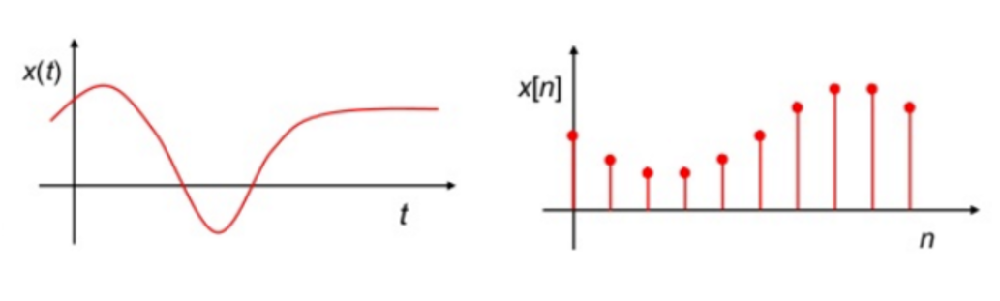
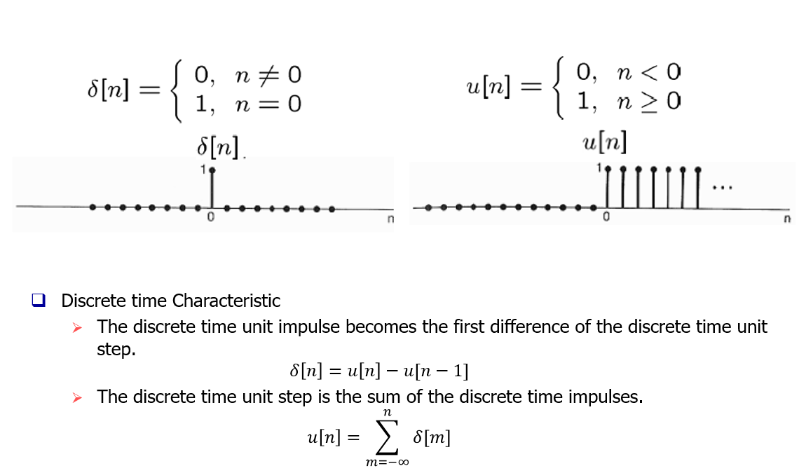
Fig 2. Unit impulse and Unit step function
유닛 임펄스는 신호의 특정한 값을 추출해내는 샘플링에서 유용하게 쓰일 수 있습니다.
예를 들어 시그널 x[n]에서 n=0인 점 x[0]을 추출해본다고 가정을 해볼 때, x[n]에 𝛿[n]을 곱하면 x[0]𝛿[n]으로 샘플링이 가능합니다.
더 나아가 신호 x[n]에서 n=n0를 추출하려면 x[n]에 𝛿[n-n0]를 곱하게 되며 이 두 번째 공식이 만족하게 됩니다.
그리고 여기서 깔끔하게 상수 x[n0]를 얻으려면 아래와 같이 무한급수를 도입하면 됩니다.
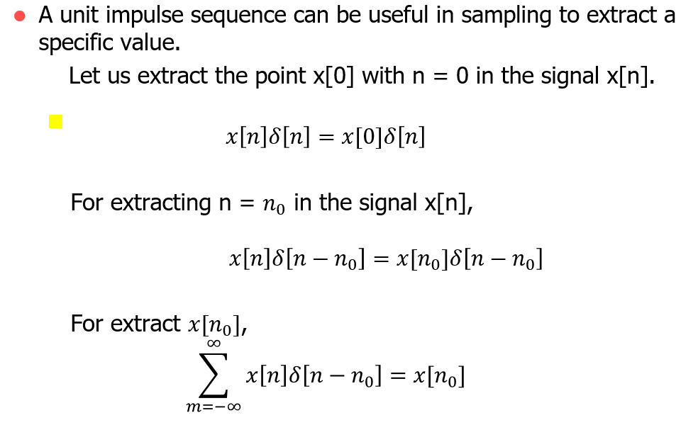
Fig 3. Discrete time Characteristic
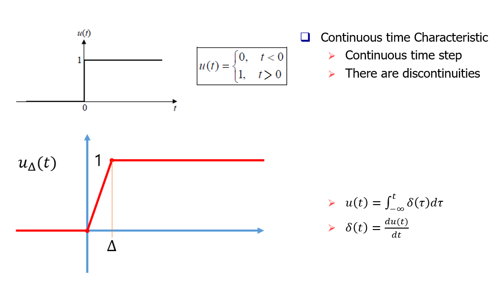
Fig 4. when ∆ goes zero, u(t) become extreme of 𝑢∆(𝑡)
식을 보면 디스크리트 타임에서의 합은 연속시간에서의 적분에 대응되므로 continuous 유닛 스텝은 continuous 유닛 임펄스 함수의 적분이 되어야 합니다.
마찬가지로 이산시간 유닛 임펄스는 이산시간 유닛 스텝의 1차 차분이며 이 일차 차분은 연속시간에서의 1차 도함수에 대응되므로 연속시간 유닛 임펄스는 연속시간 유닛 스텝의 1차 도함수가 되어야 합니다.
그래서 이 식을 t로 미분할 수 있습니다. 그런데 u(t)는 t는 0이 아닐 때 상수함수로 일정하므로 미분 식에 의해서 델타 t=0이 아닐 때 0이 됩니다. 따라서 u(t)는 t=0에서 불연속적입니다. 따라서 t=0에서 u(t)는 미분불가능합니다.
그렇다면 연속시간에서의 유닛 임펄스 함수 델타(t)를 그래프로 어떻게 그리냐면 미분식과 근사를 사용합니다.𝛿∆(𝑡)
그림에서와 같이 u(t)를 0즉 u(t)는 ∆가 0으로 갈 때 u∆(t)의 극한이 됩니다.
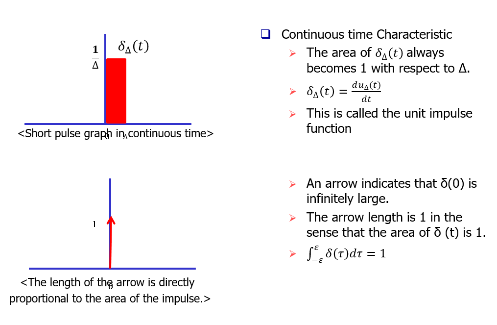
Fig 5. Continuous-time Characteristic
델타세모티는 세모동안 세모분의 1의 값을 가지는 짧은 펄스 형태의 그래프가 됩니다.
그리고 펄스 면적은 ∆에 대해서 항상 1이됩니다. 결국 델타티는 엄청나게 짧은 시간동안 엄청나게 큰 값은 가지는 면적이 1인 펄스가 됩니다.
이러한 이상적인 펄스를 우리는 임펄스라 하고 단위임펄스 함수라고 부릅니다.
델타 0이 무한히 크다는 의미에서 화살표로 표현하고 델타티의 면적이 1이다는 의미에서 화살표 길이를 1로 하고 화살표 옆에 1로 표시했습니다.
델타티는 t=0에만 집중되어있는 면적이 1인 임펄스이므로 임의의 양수 엡실론은 0보다 큰것에 대해서 이 공식이 항상 만족 합니다.
결국 임펄스의 화살표 길이는 임펄스의 면적에 정비례 합니다.
[연속시간 신호 시스템과 이산시간 신호 시스템]
시스템은 무엇일까요?
시스템이란 입력신호가 시스템에 의해 변환되거나 시스템이 응답되도록 출력을 나타내는 것입니다.
 Fig 6. Continuous time system and Discrete time system
Fig 6. Continuous time system and Discrete time system
일종의 블랙박스처럼, input값을 넣으면 연속시간 시스템 또는 이산시스템에 따라 그 출력값이 나오는 간단한 개념입니다.
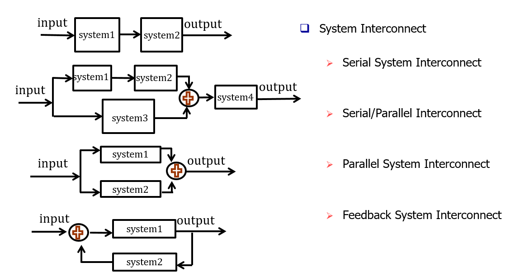
Fig 7. Continuous time system and Discrete time system
이 시스템에 따라 상호연결방식이 다른데 일반적으로 4가지가 주로 있습니다.
그림과 같이 직관적으로 알 수가 있는데 직류방식(cascade), 병렬방식, 직렬/병렬방식, 피드백 방식 등이 있습니다.
[기본 시스템 속성(Stability/Time Invariance/Linearity)]
다음으로, 기본적인 시스템 특성을 살펴보겠습니다.
일반적으로 6가지 특성이 있지만, 그 중 가장 중요한 안정성/시불변성/선형성 3가지만 살펴보도록 하겠습니다.
그림을 살펴보면 위의 추를 당긴 x(t)부분이 일종의 input이라 볼 수 있고, 인풋에 따라 굴절 각이 생긴 y(t)가 아웃풋이라 할 수 있습니다.
이 때 제한된 입력으로 제한된 범위로 출력됨을 알 수 있고 이를 일종의 stable system이라 볼 수 있습니다.
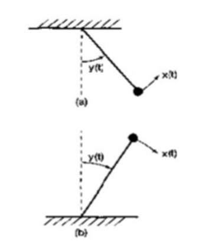
Fig 8. stable system and unstable system
결과적으로 x(t)에 작은 힘이 가해진다면 수직으로부터 굴절각도 작을 것입니다.
반면 아래 그림은 중력이 수직으로부터 굴절 각을 증가시키는 힘이 가해질 것이고, 가해진 x(t)가 작을지라도 굴절 각은 커지므로 추는 쓰러지면서 불안정한 시스템이 됩니다.
타임 인베리언스의 경우, 개념적으로 만약 시스템의 행동과 특성이 시간에 대해 고정되어 있다면 그 시스템은 타임 인베리언스의 특성을 지녔다고 할 수 있습니다.
예를들어, 우리가 같은 시스템으로 내일 실험해서 얻은 값이 오늘과 같은 실험을 통해 얻은 값과 같음을 예상할 수 있습니다.
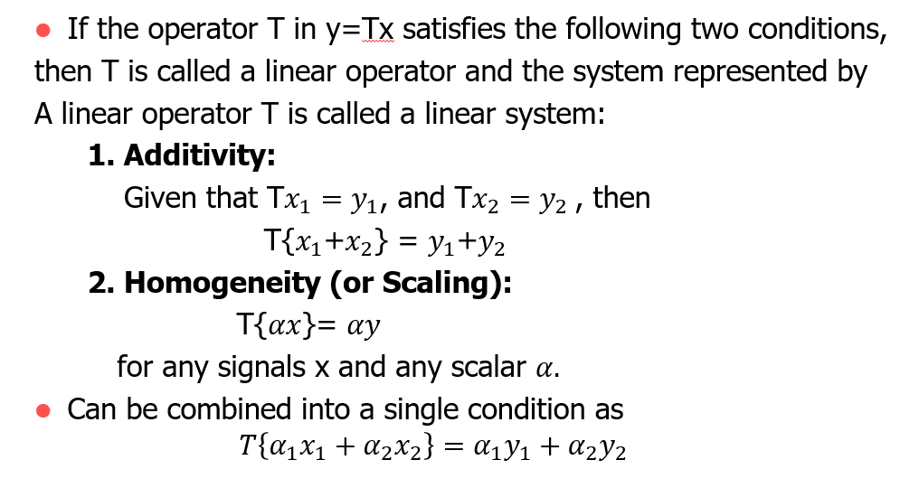
Fig 9. Linearity
유닛 임펄스는 신호의 특정한 값을 추출해내는 샘플링에서 유용하게 쓰일 수 있습니다.
예를 들어 시그널 x[n]에서 n=0인 점 x[0]을 추출해본다고 가정을 해볼 때, x[n]에 𝛿[n]을 곱하면 x[0]𝛿[n]으로 샘플링이 가능합니다.
더 나아가 신호 x[n]에서 n=n0를 추출하려면 x[n]에 𝛿[n-n0]를 곱하게 되며 이 두 번째 공식이 만족하게 됩니다.
그리고 여기서 깔끔하게 상수 x[n0]를 얻으려면 아래와 같이 무한급수를 도입하면 됩니다.
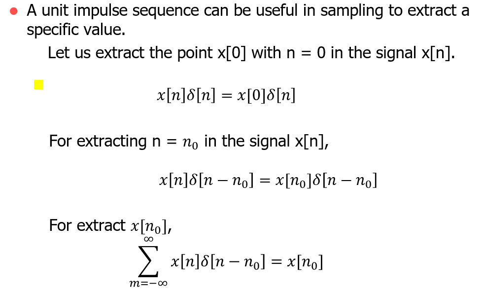
식을 보면 디스크리트 타임에서의 합은 연속시간에서의 적분에 대응되므로 continuous 유닛 스텝은 continuous 유닛 임펄스 함수의 적분이 되어야 합니다.
마찬가지로 이산시간 유닛 임펄스는 이산시간 유닛 스텝의 1차 차분이며 이 일차 차분은 연속시간에서의 1차 도함수에 대응되므로 연속시간 유닛 임펄스는 연속시간 유닛 스텝의 1차 도함수가 되어야 합니다.
그래서 이 식을 t로 미분할 수 있습니다. 그런데 u(t)는 t는 0이 아닐 때 상수함수로 일정하므로 미분 식에 의해서 델타 t=0이 아닐 때 0이 됩니다. 따라서 u(t)는 t=0에서 불연속적입니다. 따라서 t=0에서 u(t)는 미분불가능합니다.
그렇다면 연속시간에서의 유닛 임펄스 함수 델타(t)를 그래프로 어떻게 그리냐면 미분식과 근사를 사용합니다.𝛿∆(𝑡)
그림에서와 같이 u(t)를 0
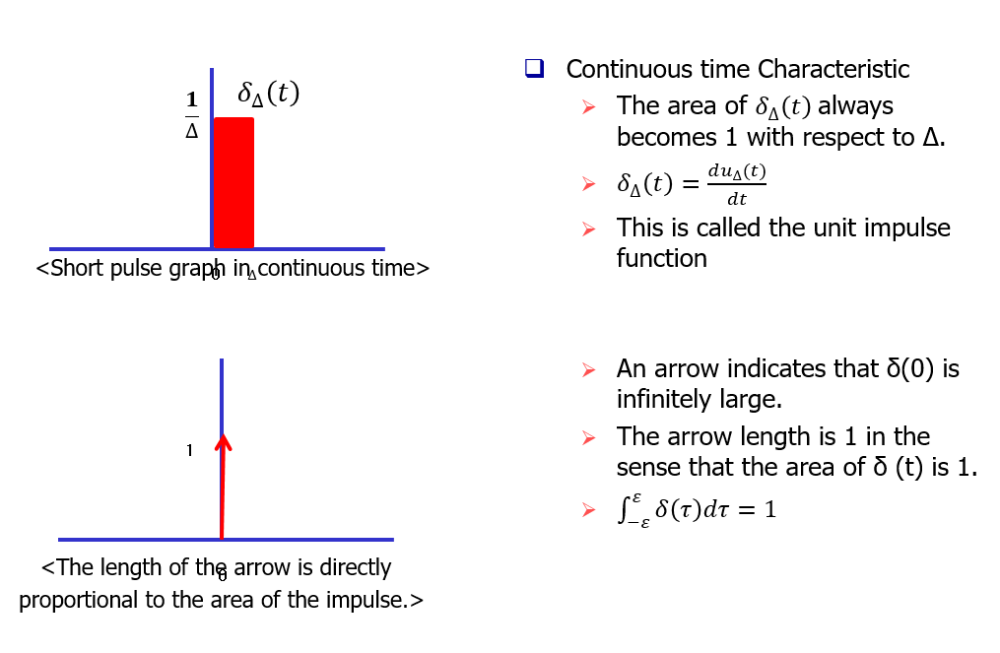
델타세모티는 세모동안 세모분의 1의 값을 가지는 짧은 펄스 형태의 그래프가 됩니다.
그리고 펄스 면적은 ∆에 대해서 항상 1이됩니다. 결국 델타티는 엄청나게 짧은 시간동안 엄청나게 큰 값은 가지는 면적이 1인 펄스가 됩니다.
이러한 이상적인 펄스를 우리는 임펄스라 하고 단위임펄스 함수라고 부릅니다.
델타 0이 무한히 크다는 의미에서 화살표로 표현하고 델타티의 면적이 1이다는 의미에서 화살표 길이를 1로 하고 화살표 옆에 1로 표시했습니다.
델타티는 t=0에만 집중되어있는 면적이 1인 임펄스이므로 임의의 양수 엡실론은 0보다 큰것에 대해서 이 공식이 항상 만족 합니다.
결국 임펄스의 화살표 길이는 임펄스의 면적에 정비례 합니다.
[연속시간 신호 시스템과 이산시간 신호 시스템]
시스템은 무엇일까요?
시스템이란 입력신호가 시스템에 의해 변환되거나 시스템이 응답되도록 출력을 나타내는 것입니다.
일종의 블랙박스처럼, input값을 넣으면 연속시간 시스템 또는 이산시스템에 따라 그 출력값이 나오는 간단한 개념입니다.
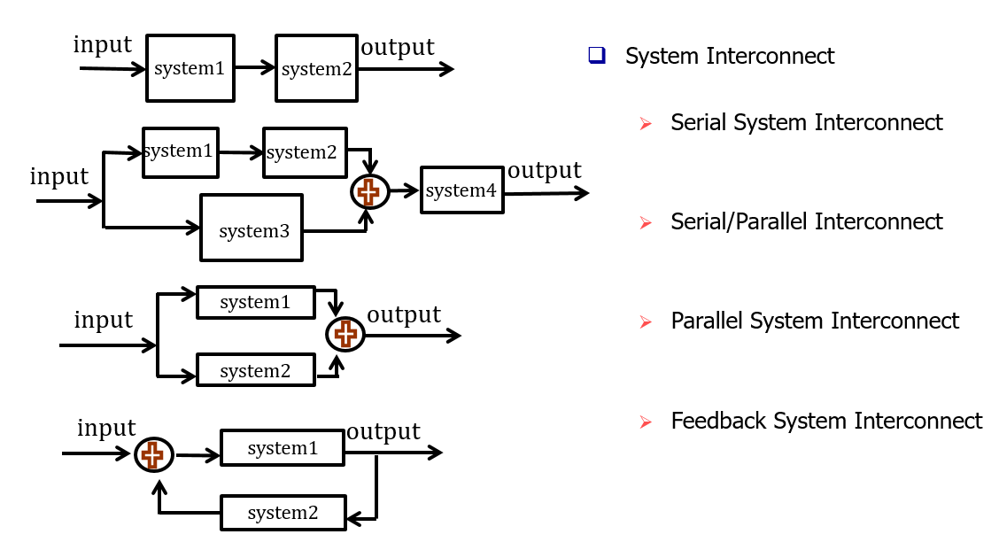
이 시스템에 따라 상호연결방식이 다른데 일반적으로 4가지가 주로 있습니다.
그림과 같이 직관적으로 알 수가 있는데 직류방식(cascade), 병렬방식, 직렬/병렬방식, 피드백 방식 등이 있습니다.
[기본 시스템 속성(Stability/Time Invariance/Linearity)]
다음으로, 기본적인 시스템 특성을 살펴보겠습니다.
일반적으로 6가지 특성이 있지만, 그 중 가장 중요한 안정성/시불변성/선형성 3가지만 살펴보도록 하겠습니다.
그림을 살펴보면 위의 추를 당긴 x(t)부분이 일종의 input이라 볼 수 있고, 인풋에 따라 굴절 각이 생긴 y(t)가 아웃풋이라 할 수 있습니다.
이 때 제한된 입력으로 제한된 범위로 출력됨을 알 수 있고 이를 일종의 stable system이라 볼 수 있습니다.
결과적으로 x(t)에 작은 힘이 가해진다면 수직으로부터 굴절각도 작을 것입니다.
반면 아래 그림은 중력이 수직으로부터 굴절 각을 증가시키는 힘이 가해질 것이고, 가해진 x(t)가 작을지라도 굴절 각은 커지므로 추는 쓰러지면서 불안정한 시스템이 됩니다.
타임 인베리언스의 경우, 개념적으로 만약 시스템의 행동과 특성이 시간에 대해 고정되어 있다면 그 시스템은 타임 인베리언스의 특성을 지녔다고 할 수 있습니다.
예를들어, 우리가 같은 시스템으로 내일 실험해서 얻은 값이 오늘과 같은 실험을 통해 얻은 값과 같음을 예상할 수 있습니다.
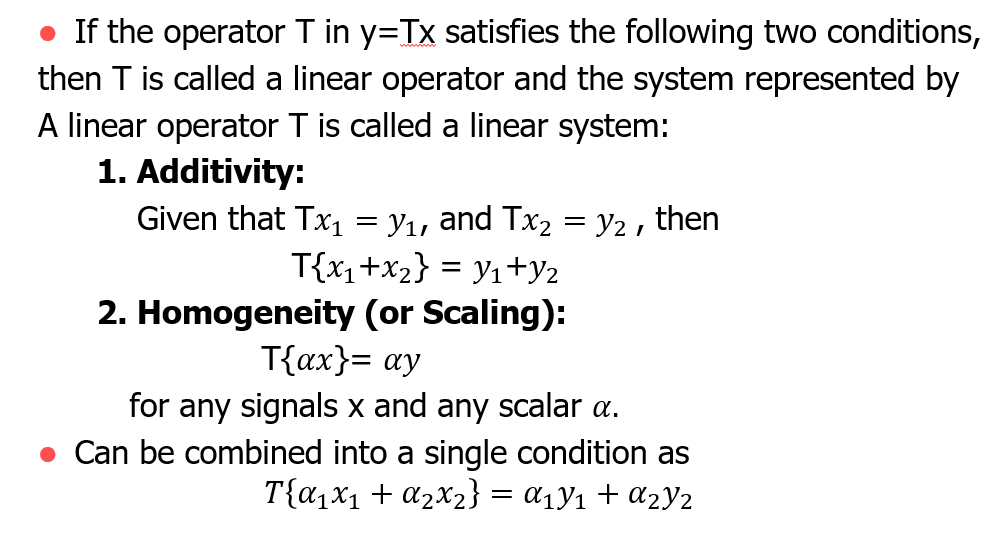